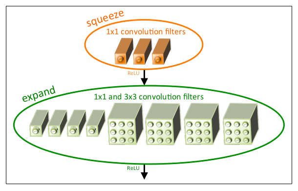
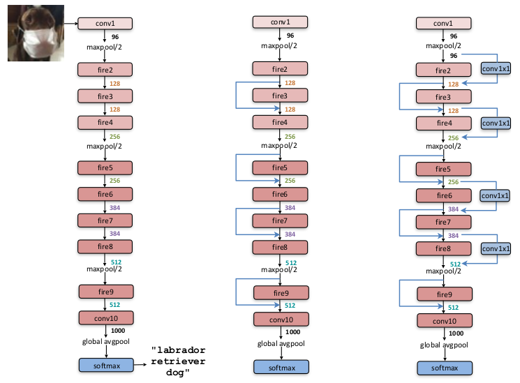
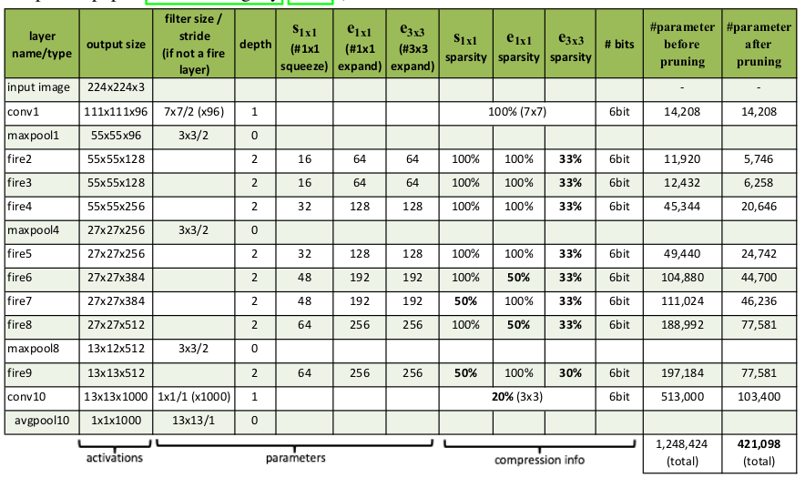
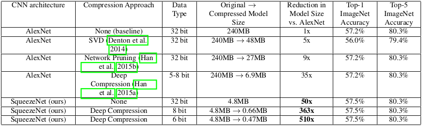
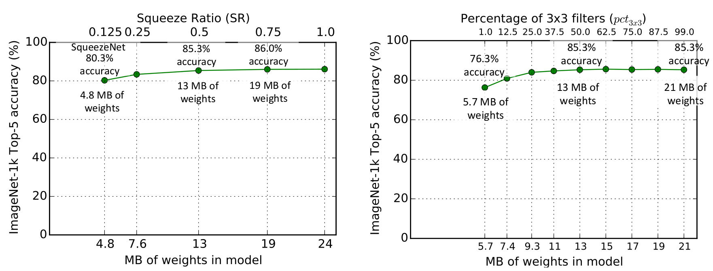
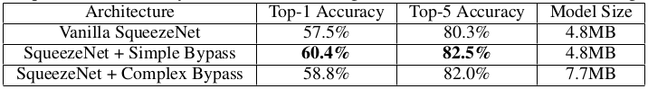

SqueezeNet
目录
原文:SqueezeNet: AlexNet-level accuracy with 50x fewer parameters and < 0.5MB model size
Abstract
本文提出了 SqueezeNet 网络结构,该结构主要目标是在保持相同识别精度的情况下,尽 可能的降低模型规模.较小规模的网络具有:1.在分布式训练下,更小的网络需要更少的网 络的交互,更快的进行训练;2. 更小的网络更利于预训练的模型发布;3. 更小的网络可以 在内存更小的硬件环境上执行运算.
SqueezeNet 只需要 AlexNet 50 分之一的参数就能够达到和 AlexNet 相同的精度.此 外在额外的模型压缩技术帮助下,最终可以将 SqueezeNet 网络压缩到 0.5MB 以下, 小于 AlexNet 510 分之一.
Introduction And Motivation
当前的卷积神经网络研究大多集中于各种机器视觉数据集上的精度提升.存在多种卷积神 经结构都可以达到相似的识别精度.对于相同的识别精度等级上,具有更少参数的网络具有 如下几个优点:
- 更有效的分布式训练
- 对于分布式卷积神经网络训练,多个训练节点之间网络的通 信成本是整个训练的瓶颈.而通信的成本与网络结构的参数小大成正比.也 就是说更小的网络结构,分布式训练速度更快.
- 模型发布
- 对于自动化驾驶,需要周期性的更新模型到客户的汽车.更小的模型需要 更少的带宽来实现更新,从而能够实现更为快速和高效的模型更新.
- FPGA 和嵌入式部署
- FPGA 和嵌入式硬件环境内存较少.更小的模型可以直接将模型 存储在 FPGA 和嵌入式环境中.
如上,可以看到更小的网络结构具有很多种优势.
Related Work
Model Compression
本文的主要目标是采取更少参数的网络结构,并保持相同的精度. 一个显而易见的方法 是,对现有已经存在的卷积神经网络进行损压缩方式(lossy fashion). 实际上,模型压 缩(model compression)是研究的一个热点,并且已经提出了很多方法.一个较为直观的 方法是对预训练的模型执行奇异值分解压缩模型.Han et al 针对预训练的模型执行网络 剪枝(Network Pruning),设定一个阈值将低于该阈值的参数设置为 0,从而构建稀疏矩 阵,最后在该稀疏卷积神经网络上执行几轮训练.Han et al 将上述网络剪枝和量化 (quantization)结合,并且最后采取霍夫曼编码(huffman encoding)进行模型编码, 整个压缩过程叫做深度压缩(Deep Compression).并且设计了一个硬件加速器叫做 EIE.
CNN Micro-architecture
LeCun et al 在 1980 年运用卷积到数字识别,使得卷积神经网络流行起来.卷积核一般 都是 3D,高度,宽度和通道.第一层卷积网络的卷积核一般具有 3 通道;在随后的网络层 Li 卷积核的通道数和上一层的网络层 Li-1的卷积核数量相同.最开始 LeNet-5 采 取的是 5*5*channels 卷积核,最近的 VGG 网络采取的都是 3*3 卷积核,Network-in-Network 和 GoogLeNet 内的一些模块使用 1*1 卷积核实现一些特殊作用.
随着网络结构越来越深,针对每一层的卷积核的尺度的选择成为了一个非常笨重的工作.为 了克服上述问题,发展了将多层网络结构组合形成高级构建模块(modules).例如: GoogLeNet 就提出了 Inception modules, 该模块通过将一些列各种尺度(1*1, 3*3, 5*5, 1*3, 3*1)的卷积核进行组合形成构建模块.然后将模块组合形成一个完整的 网络结构.使用 CNN micro0architecture 来标示这些模块.
CNN Macro-architecture
micro-architecture 用来标示单个网络层和网络模块;同时,定义 macro-architecture 标示多个网络模块组成的端到端的网络结构.
当前卷积网络 macro-architecture 研究最多的课题在于网络深度(网络层数量)对 网络精度的影响.VGG 网络结构由 12-19 层结构,并且发现越深的网络在 ImageNet-1k 的数据 集上表现越好.ResNet 发现具有 30 网络层的网络结构能够获得更高的识别精度.
层和层的链接方式也是 macro-architecture 的研究热点.ResNet 和 HighWap Network 提 出了夸层链接方法(bypass connections),并且 ResNet 在 34 层卷积层发现具有夸层链接 的网络在 ImageNet 上比没有夸层链接的网络有 2 个百分点的提升.
Neural Network Design Space Exploration
神经网络由于 micro-architecture , macro-architecture 和其他一些设置,使 得神经网络具有很大的设计空间.有很多工作都在探讨如何自动化实现网络设计空间 (design space exploration(DSE))探索.这些自动化网络设计空间探索方法包括基于 Bayesian优化方法,模拟逆火(simulated annealing)1,随机搜索(randomized search)2.上述这些方法虽然都可以基于对应的 DSE 方法实现了网络结构优化,但是 这些论文都没有定义神经网络结构对效果影响的度量.在本文,避开了自动化方法,而是基 于 A/B 对比的方法来度量网络结构在模型大小和精度上有什么影响.
SqueezeNet: Preserving Accuracy With Few Parameters
本部分,介绍如何使用更少的参数来设计卷积神经网络结构.然后介绍 Fire Module ,最后 使用该模块构建卷积神经网络,叫做 SqueezeNet.
Architecture Design Strategies
为了使用更少的参数,但是需要保持相同的精度,主要采取如下三个设计策略:
-
Strategy 1 - Replace 3*3 filters with 1*1 filters, 采取 1*1 卷积核来代替 3*3 卷积核,1*1 卷积核参数 9 倍少于 3*3 卷积核.
-
Strategy 2 - Decrease the number of input channels to 3*3 filters, 对于 3*3 卷积网络,参数的数量为 输入通道 * 卷积核数量 * (3*3). 所以为了减 少参数,不光可以通过减少卷积核尺度 3*3,更为主要是通过减少输入的通道数量.
-
Strategy 3 - Downsample late in the network so that convolution layers have large activation maps, 卷积神经网络,每个卷积层都会生成一个激活矩阵.激 活矩阵的高宽由:1.输入图像 2.下采样决定.在网络层前部采取采样,那么随后的激 活矩阵的维度都会比较小;如果在网络层后部采取采样,那么网络中很多层都具有更大 的激活矩阵.可以知道的是,更大的激活矩阵的网络具有更高的分类精度.K. He 和 H. Sun3将采样应用到 4 个不同的卷积结构中,下采样越靠后,带来越高的精度.
Strategies 1 和 2 用来减少卷积神经网络的参数规模.Strategy 3 在相同参数规模下,可 以达到最大化分类精度.
The Fire Module
Fire Module 有如下组成:由 1*1 卷积核组成的压缩卷积层(squeeze),然后输入到由 1*1 和 3*3 卷积核组成的扩展层(expand).如下图所示:

图1 Fire Module
Fire Module 卷积模块.图中所示: s1x1=3, e1x1=4, e3x3 = 4.
上述 Fire Module 具有三个超参: \(s_{1x1}\), \(e_{1x1}\) 和 \(e_{3x3}\).其中: \(s_{1x1}\) 为 squeeze 层的 1*1 卷积核数量; \(e_{1x1}\) 为 expand 层中 1*1 卷积核数量, \(e_{3x3}\) 为 expand 层中 3*3 卷积核数量.根据策略 2,需要设置 \(S_{1x1}\) 小于 \((e_{1x1}+e_{3x3})\) ,使得 squeeze 层帮助减少输入到 expand 层的通道.
The SqueezeNet Architecture
下图显示了 SqueezeNet 网络结构.首先为单独的一层卷积层(conv1),其后跟着 8 个 Fire Module (fire2-9),最后为卷积层(conv10).并且卷积核的数量从 128 以 128 为单位依此增加到 512. SqueezeNet 在 conv1 , fire4 , fire8 和 conv10 后执行采样.这些采样都是根据策略 3 后置采样.

图2 SqueezeNet Architecture
左图:原始 SqueezeNet.中间:简单夸层链接的 SqueezeNet.右图:复杂夸层链接的 SqueezeNet.
具体细节可以参考下表:

图3 SqueezeNet architectural dimensions
- Other SqueezeNet Details
figure-2 和 figure-3 中忽略了一些细节和设计.如下为对应的一些细节和背后的对应论文:
- 为了保证从 1*1 卷积和 3*3 卷积激活矩阵具有相同的高度和宽度,需要在 3*3 卷积采取 1 个像 素的零值填充(padding).
- ReLU 4 为 squeeze 和 expand 层采取的激活函数
- 在 fire9 采取 50% Dropout 5
- 和 NiN6 采取相同的策略, SqueezeNet 没有采取全链接层
- SqueezeNet 训练过程,学习率从 0.04 开始衰减,具体和 Mishkin7 一样.其他的训 练参数可以参考官方 caffe 实现的代码8
- 上述的 FireModule 中 expand 层都是将两路的 1*1 卷积结果和 3*3 卷积结果在深度通道上拼接.
Evaluation Of SqueezeNet
SqueezeNet 以各种压缩后的 AlexNet 作为对比基准.figure-4显示了 SqueezeNet 比 AlexNet 小 50 倍,并且同时 top-1 和 top-5 的准确性达到了 AlexNet 水平.并且在小的 模型上进行对应的模型压缩也不会影响模型效果.

图4 SqueezeNet Comparing to compressed AlexNet
CNN Micro-Architecture Design Space Exploration
基于上述提出的网络结构设计策略,构建了 SqueezeNet,并且可以看到与 AlexNet 的准确性相 同,并且 50 倍小于 AlexNet 模型大小.
本节和下一节将会讨论网络结构设计空间,本节主要讨论网络层和网络模块网络结构设计空 间,下一节讨乱端到端的网络层和网络模块组织的设计空间.
本节设计和讨论了基于Architecture Design Strategies的 micro-architecture 设计空间 对于模型的大小和准确性的影响.
CNN Micro-architecture Meta Parameters
在 SqueezeNet, Fire Module 具有三个维度超参: \(s_{1x1}\), \(e_{1x1}\) 和 \(e_{3x3}\).SqueezeNet 具有 8 个 Fire Module,所以有 24 个维度超参.为了能够大范围探 索 SqueezeNet 的网络结构,定义了更高阶的元参数(meta-parameters)控制所有的 FireModule 的维度. \(base_{e}\) 为第一个 Fire Module 的 expand 卷积核数量.每 \(freq\) 个 Fire Module, 增加 \(incr_{e}\) 个 expand 卷积核.换句话说,对于 FireModulei,expand 卷积核的数量 \(e_{i}=base_{e}+(incr_{e}*\left\lfloor\frac{i}{freq}\right\rfloor)\). 在 expand 层卷积核为 1*1 和 3*3 组成;定义 \(e_{i}=e_{i,1x1}+e_{i,3x3}\) , 且定义 $pct3x3$(范围[0,1],所有的 fireModule 共享) 为 3x3 的比例.即是说, \(e_{i,3x3}=e_{i}*pct_{3x3}\) , \(e_{i,1x1}=e_{i}*(1-pct_{3x3})\). 最后定义元参数 SR(squeeze ratio, 范围为[0,1],为所有 fire module 共享): \(s_{i,1x1}=SR*e_{i}\) (\(s_{i,1x1}=SR*(e_{i,1x1}+e_{i,3x3})\)).SqueezeNet(如figure-3所示)的网络结构由上述 元参数定义:basee=128, incre=128, pct3x3=0.5, freq=2, SR=0.125.
Squeeze Ratio
Squeeze 网络层用来减少输入到 expand 层的 3*3 卷积核的输入通道.所以定义了 SR(squeeze ratio)元参数,为 squeeze 层的卷积核数量和 expand 层的卷积核数量的比例.为了确定 SR 对模 型大小和准确性的影响,如下设计了一些实验.
以 SqueezeNet(figure-2)作为默认模型,这些实验使用如下元参数: \(base_{e}={128},incr_{e}=128,pct_{3x3}=0.5,freq=2\) .使用[0.125,1.0]之间的多个 squeeze ratio(SR)来训练不同模型.figure-5(a)显示了对应的实验结果,每个点代表一个 从头训练的模型.由于 SR 设置为 0.125,为比较低的压缩比例,所以模型叫做 SqueezeNet. 从图中,可以看到随着 SR 的增长在 ImageNet top-5 的识别准确性从 80.3%增加 到 86.0%,但是模型的大小也从 4.8MB 增加到 19MB.

图5 micro-architectural design space exploration
Trading Off 1*1 and 3*3 Filters
在Architecture Design Strategies提出了将一些 3*3 卷积核转为 1*1 卷积核,从而减少参数.一 个问题是,那么卷积神经网络中卷积空间尺度对识别精度有什么影响?
VGG 网络仅仅使用了 3*3 空间尺度的卷积核.GoogLeNet 和 Network-in-Network(NiN)在一些 层上使用了 1*1 卷积核.GoogLeNet 和 NiN 只是使用了 1*1 和 3*3 卷积核,但是没有进行过更多的 分析.如下需要分析不同比例的 1*1 和 3*3 卷积核对模型和准确性的影响.
使用如下的元参数: \(base_{e}=incr_{e}=128, freq=2, SR=0.500\) ,对参数 \(pct_{3x3}\) 从 1%到 99%进行实验.实验结果如figure-5(b)所示,可以看到 13MB 的模型在(a)和(b)是一样 的网络结构:SR=0.500 和 pct3x3=50%.可以看到采用 50%的 3*3 卷积核可以达到 85.6%.而 且可以看到随着继续增加 3*3 比例,会带来更大的模型大小,但是准确性并不会再提升.
CNN Macro-Architecture Design Space Exploration
现在探讨整个网络结构的设计空间.参照 ResNet,主要探索三个不同结构:
figure-2显示了三种网络结构.
简单的夸层链接结构,在 Fire-3,5,7,9 增加了夸层链接.和 ResNet 一样,在 Fire3 实现夸层链接,只 需要将 Fire4 的输入等于 Fire2+Fire3 的输出即可.
简单的夸层链接结构需要保证输入的通道和输出的通道数量必须保持一致.所以因为 freq=2, 只有一半的 FireModule 可以添加简单的夸层链接.
如果输入的通道和输出的通道不同,那么就需要使用复杂的夸层链接结构,和简单的夸层链接 直接链接不同的是,复杂的夸层链接结构需要增加一个 1*1 卷积层来将输入的通道调整到输出 的通道数.可以看到复杂的夸层链接增加了模型的额外的参数.
夸层链接额外的减轻了 squeeze 层对整个网络表达能力的降低作用.由于 SR 设置为 0.125,即每 一个 squeeze 层只有 8 分之 1 的输出通道与随后跟着的 expand 层对比.就是这样的通道 维度的压缩,使得能够通过 squeeze 层的信息就变少了.通过增加夸层链接,使得信息可以直接 跨过 FireModule 层.
训练了如图figure-2所示的 3 个网络结构,结果在figure-6所示.可以看到增加了夸层链接 的网络对准确性具有一定的提升.并且有趣的是简单夸层链接结构的网络准确性高于复杂结 构.

图6 SqueezeNet accuracy and model size using different macro-architecture configurations
Conclusions
本文尝试去探索了网络设计空间,并且提出了 SqueezeNet 一种卷积神经网络,50 倍少于 AlexNet 网络参数规模,但是可以达到和 AlexNet 一样的准确性.并且可以将 SqueezeNet 压 缩到 0.5MB 以下,510 倍少于 AlexNet.并且如果采取信的模型压缩方法 Dense-Sparse-Dense11,该种方法在训练过程中作用和正则化一样可以提高模型的准确 性.
脚注:
An optimization methodology for neural network weights and architectures
An optimization methodology for neural network weights and architectures
Convolutional neural networks at constrained time cost
Rectified linear units improve restricted boltzmann machines
Dropout: a simple way to prevent neural networks from overfitting
Network in network
Systematic evaluation of cnn advances on the imagenet
Highway networks
Deep residual learning for image recognition
Regularizing deep neural networks with dense-sparse-dense training flow